BlackMast.net
The story of Mischief, a black masted sailboat newly arrived in Southeast Alaska, from Panama City Florida.
This is a classic sailboat story, albeit slowly developing because of too many things to do. Somebody tell Jack and Jim to send their part of the story, and the web slave will add a page or more for that.
A magnificent steel sailboat made in Panama City, Forida, by Jack and Jim Peacock, purchased by Mark Wumkes and Joan Walser, trucked to the Bellingham Washington, sailed to Juneau Alaska, destined for Sitka, and the story starts.
Let us just consider this a bit. This is an ongoing sail boat story, for all the people who want to get a sail boat, such as Joan and Mark did, for your enjoyment of their adventure while you work on getting your sailboat.
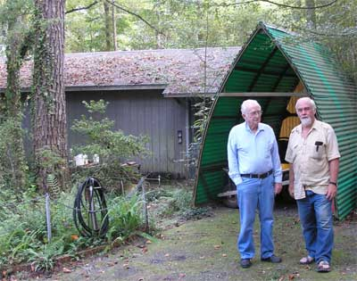
Mischief was originally built with the name Joshua Slocum, the famous circumnavigator. She was built from 1980 to 1989, in Panama City, Florida.
That is Jack and Jim, father and son, the builders.
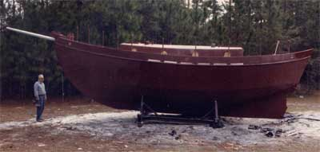
The completed hull, painted with primer.
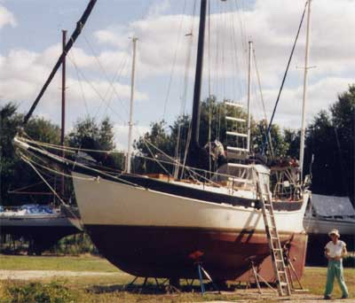
First haul-out to check the condition of the bottom paint.
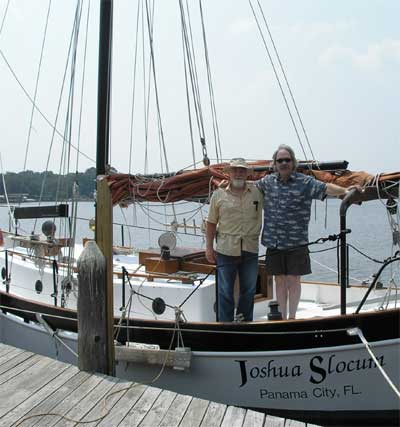
Jim and Mark. The master changes servants.
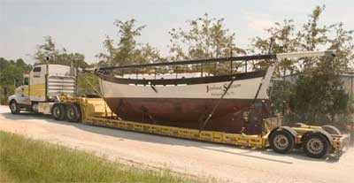
After sailing Florida, leaving for Bellingham Washington. A sailboat road-trips the country, corner to corner.
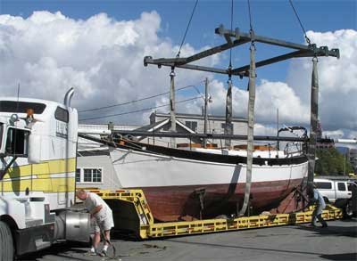
Arriving and unloading.
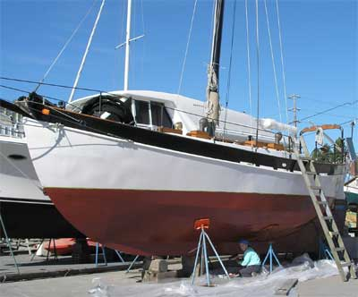
Repainting the bottom, other new owner refurbishments, and rechristened Mischief.
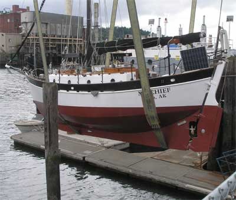
Into a new ocean.
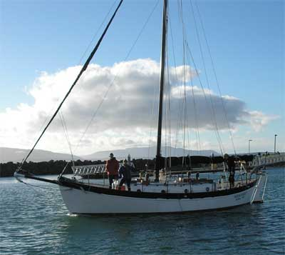
Shake-down cruise in Bellingham Washintgon, getting familiar with the boat.
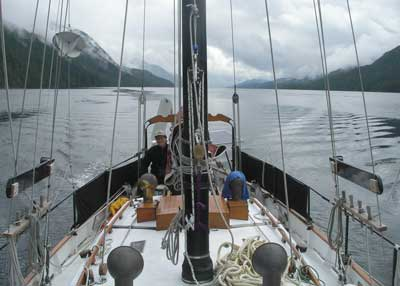
Joan handles the helm as Mischief transits Finlayson Channel on the journey north through the inside passage of Alaska.
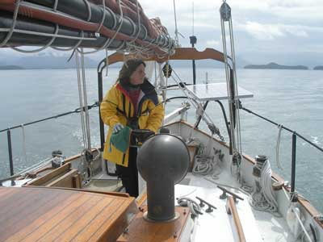
Joan tends the tiller, motoring north through the inside passage. Calm or contrary winds were the norm for most of the joruney north. Fortunately Mischief gets great fuel mileage. The entire trip from Bellingham Washington to Juneau Alaska consumed less than 70 gallons of fuel.
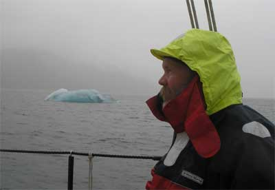
Arriving north.
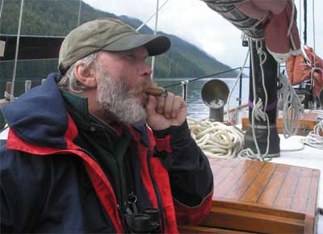
Arrival cigar.
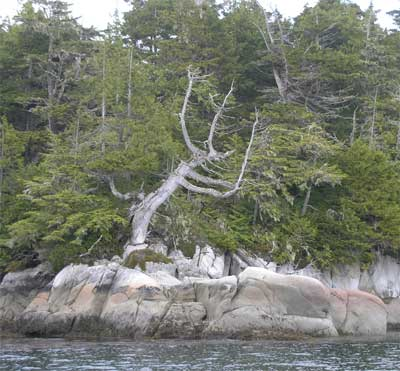
A Northern Ent waves and smiles, at the pleasant sight of a steel sailboat.
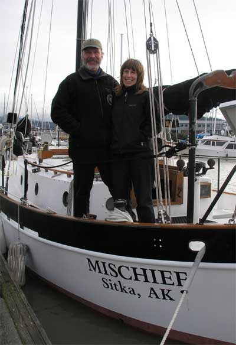
Mark and Joan.
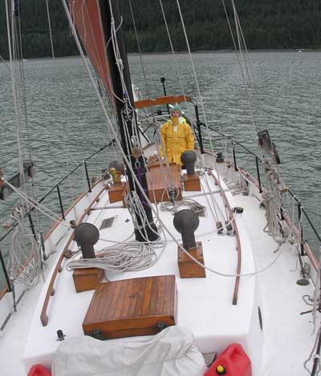
Joan at the helm. Light air sailing in Gastineau Channel in the summer of 2007. Whales, seals, sea lions, porpoises, sea otters and eagles for companionship.
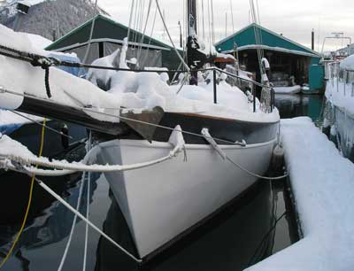
The stark reality of an Alaskan sailboat in winter, in culture shock from Florida. But fabulous skiing at Eaglecrest ski area uphill from the harbor.
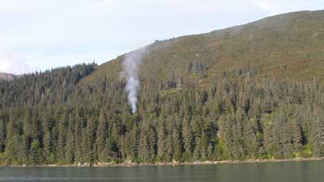
A little spot brush clearing for the crew cabin on land nearby.
There will be more as the adventure continues.
Inquiries for the moment may be made to the web slave, Doug at Buchanan.ws (replace at with @)